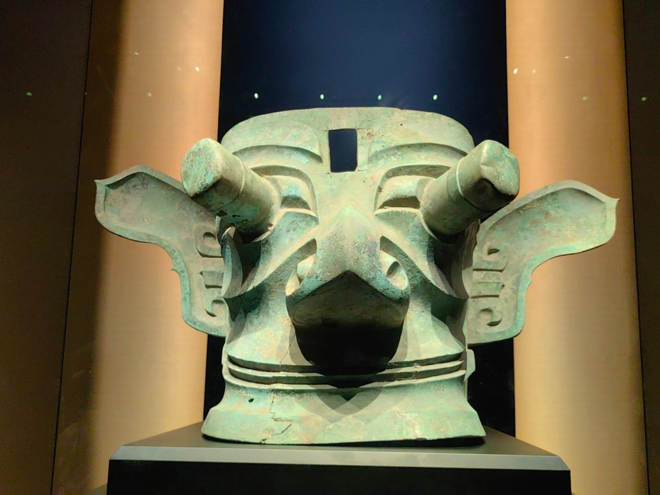

★ 兩篇以上攻略或官方都提到；單一來源 只有一篇。 大眾點評、小紅書、知乎擋爬蟲，人均多半未查到；有寫的是攜程或去哪兒的數字（2026/11 查）。點菜記得說「微辣」。
重慶
🪜 十八梯
怎麼逛
- 從上往下逛 ★：從北門（可拍全景）或「茶颜悦色十八梯店」開始一路下樓梯。
- 較場口站 11 號口出來就是城市陽台 單一來源。
- 攻略的連逛順序是山城巷 → 十八梯 → 八一路好吃街 → 解放碑（地下通道約 600 m、8 分）★。行程是十八梯 → 山城巷：十八梯從上往下到底後，要再往上走約 806 m 回領事巷入口。
- 停留：攜程點評 2～3 小時、Trip.com 1～3 小時；行程排 1.5 小時。晚上亮燈較好看，一早人少好拍（各一篇）。
店家（渝中文旅名錄，不是實測推薦；人均都未查到）
- 小滨楼·柒点坊：擔擔麵、雞絲豆腐腦（13号附3号）
- 豆相识豆腐脑（B7栋）、巷巷油茶（A8-2-6）
- 洞子老火锅：防空洞火鍋（B1栋）
- 茶館：泰和茶馆（山城記憶館一層）、S1949茶坊（露台，B6栋）、幺师下山（蓋碗茶，B7栋）
必拍／注意
- 頂層觀景台、星巴克古風概念店、朱炳仁銅藝術館 單一來源
- 商業化、節假日人多；小店蓋章多半要消費 ★
來源：攜程點評、去哪兒 2024-03、騰訊新聞 2025-06、本地寶 2025-04、本地寶轉載渝中文旅。筆記：1209_渝中老街攻略
🏘️ 山城巷
怎麼逛（全程下坡）★
- 導航到「領事巷」入口
- 荒野花園 → 仁愛堂 → 時光里圖書館（金馬小學舊址）→ 坝坝茶
- 愛情小巷 → 懸崖棧道 → 厚廬 → 山城記憶館
- 中興路出口；左轉往上約 5 分到十八梯
上下落差 70 多米；含十八梯約 4～5 小時（去哪兒 2024-02）。行程只排約 50 分，挑荒野花園到仁愛堂、懸崖棧道這段走。步道圖上的路不一定走得通（搜尋摘要）。
店家
- 白铁MAKER（咖啡）：仁愛堂往南約 30 m，二樓露天江景 單一來源（2024-10，現在還有沒有開未查到）
- 慈记外婆桥·江景·川菜小吃(山城巷店)：山城巷47号，10:30-20:00；攜程 4.5 但只有 2 則 單一來源
- 老谢家饮食店（山城巷88号）、啥子巷巷大汤圆（山城巷52号）、弄色花厨（中兴路234号）單一來源
來源：去哪兒 2024-02、渝中區政府、渝中最重庆 2024-10、攜程 慈记。筆記：1209_渝中老街攻略
🏛️ 湖廣會館＋東水門
館內路線 ★
- 大門 → 移民博物館 → 禹王宮 → 渝州書院
- 廣東公所 → 齊安公所 → 雕刻博物館（先爬坡後下坎，也可反向）
- 出口搭電梯上東水門大橋，從橋上拍會館全景 ★
- 交通：小什字站 7 號口 → 東水門橋頭 → 搭橋頭電梯下橋（約 8 分）；另一篇寫 8 號口。
- 每週一移民博物館閉館，12/9（三）不受影響 單一來源。
- 《醉巴渝》在齊安公所 15:30、16:40，各 40 分；套票 88 或 68 元兩說；12 月有沒有演未查到。
- 必拍：齊安公所長階梯拐角的露台、館內黃牆 單一來源。
店家
- 東水門老街：2023-09 開街的火鍋街（桥头火锅、朝天门火锅、刘一手、老山城洞子老火锅、德庄）；2025 年後還在不在未查到
- 八省会古川菜体验馆（芭蕉园1号）單一來源
- Nogy Garden 糯吉小院（咖啡，下洪学巷42号）單一來源
來源：搜狐 2024-09、搜狐 2024-12。筆記：1209_渝中老街攻略
🧗 戴家巷崖壁步道
怎麼逛（從上往下）
- 上方入口：2 號線臨江門 A 口，往重醫附二院方向 440 m（官方）
- 貓咪塗鴉牆 → 防空洞畫廊 → 崖壁步道 → 洪崖洞底部 單一來源
⚠️ 走到底部（濱江路）後，晚餐杨记隆府在上方的臨江支路，要再爬回去；卡片的「約 4 分」是從戴家巷上端算的。
- 全長約 750 m、懸空段 300 m、高差近 60 m（重慶市政府網）。步道 24 小時、免費；店家約 10:00-22:00 ★
- 從棧道拍洪崖洞全景，人比較少 ★；傍晚江邊風大，帶外套 ★
咖啡（人均未查到）
- GUAGUAJUN Coffee（戴家巷25号1单元1-7，門口江景、店貓）★
- TOTOMATO（戴家巷25号2单元1-7）★
- 三尺冰·WILD BOAR CAFE（戴家巷26号2单元1-3）★
- Cliff·Cafè（24号1-3室）、PAPAYA 泰国街头小吃（24号）、崖边的盒子（13号）單一來源
來源：重慶市政府網、去哪兒 2026-06、Trip.com 2026-10。筆記：1209_渝中老街攻略
🏮 洪崖洞
怎麼逛（從 11 樓往下，全程下坡）★
- 11 樓滄白路入口（城市陽台）進；叫車不要定位 1 樓
- 民俗街巷 → 5 樓「重逢 1980」（自願付費）→ 4 樓美食區
- 1 樓濱江路拍全景 單一來源
- 11 樓接千廝門大橋，大橋人行道可俯拍全景 ★（從 11 樓走到人行道入口要幾分未查到）
- 停留：快逛 1.5～2 小時、慢逛 3～5 小時（摘要，單一來源）；行程排 75 分，先在 11 樓看全景再往下。
- 逛完 1 樓可以搭內部電梯回 11 樓，再走回解放碑（11 樓與 1 樓以電梯、樓梯相連）。
- 廁所 1、3、5、7、11 樓，免費 單一來源
- 其他機位：11 樓馬路對面、濱江路江邊、大劇院江灘、戴家巷、江北嘴 ★
- 小什字站出口說法不一（5A／6／9 號口），用高德確認。
店家
- 景區內近五年被兩篇以上推薦的店：未查到；景區內價格偏高。
- 佬麻抄手（4 層百子巷，¥29，08:30–21:30）單一來源（商業推廣文）
- 想吃小吃可走到 八一好吃街（涼蝦、小麵、腦花，單人不到 50 元）★
注意
- 黃牛的「快速通道」是騙局，景區免費 ★；1 樓機位人多。
來源：攜程洪崖洞、川觀 2026-04、本地寶 2026-07、攜程遊記 2025-02。筆記：1209_洪崖洞鵝嶺攻略
🛗 皇冠大扶梯
- 全長 112 m、高 52.5 m、坡度 30 度、全程 2 分 30 秒；上行、下行、備用共 3 台（澎湃 2022-05）。
- 能不能掃碼付款未查到：備零錢或交通卡。
- 旁邊吃的：行程已排的 高胖妹小面(两路口总店)；其他店未查到。
來源：澎湃 2022-05。筆記：1209_洪崖洞鵝嶺攻略
🌉 鵝嶺棧橋 → 二廠 → 李子壩
路線（棧橋單向，只能這樣走）
- 佛圖關公園南門進棧橋，鵝嶺公園爬山廊旁出（不能逆向）
- 鵝嶺公園：登瞰勝樓（登樓費 5～10 元，兩說）
- 沿主路往下到 鵝嶺二廠，約 8～10 分 單一來源
- 二廠北門下石階約 15 分 → 三層馬路 → 李子壩 ★
從半山崖線西入口起算全程約 2.5 小時（本地寶 2026-10）；二廠在往李子壩的下坡途中，順路 ★，停留 1～2 小時 ★。
必拍／注意
- 二廠「愛情天台」（City Radio，《從你的全世界路過》取景）★；收不收費兩說，現價未查到。
- 棧橋地面是鏤空格柵，耳機、鑰匙、手機、零錢會掉下去。
- 晚霞夏天較易見，其他季節多霧（本地寶）。
店家
- 二廠內近五年被兩篇以上推薦的店：未查到。攜程自動列表有大王油茶（¥27）、Caver·重庆精酿&老式重庆菜（¥91），不算攻略推薦。
來源：Wander in China 2026-06、本地寶 2026-10、攜程二廠。筆記：1209_洪崖洞鵝嶺攻略
🚝 李子壩穿樓輕軌
攻略建議三個視角：月台看軌道進樓、平台拍列車穿出、坐車廂看。照行程的順序（從二廠走下來）：
- 先到觀景平台，對準列車穿出的開口連拍
- 13:30 進站，在月台看軌道進樓
- 這次搭 2 號線時坐駕駛室後方第一節窗邊，看車廂內的視角
- 停留 20～40 分 單一來源；出口 1 號口／B 口說法不一。
- 穿的是住宅樓：留在平台、保持安靜，不要在樓下拍。
- 李子壩吃的選擇少；行程已排 李子坝梁山鸡。
來源：gochinatravel 2026-09、網易 2026-08。筆記：1209_洪崖洞鵝嶺攻略
🏮 磁器口古鎮
怎麼逛
- 1 號線磁器口站 1 號口 ★。停留：攜程、去哪兒 3～6 小時，搜狐 1～3 小時；行程排 14:20～17:30。
- 行程排在下午（攻略說上午 9～11 點人少，12 點後團客多）：先走後街（人較少），再接河街，17:55 日落前拍正街。
- 東南門（黃桷坪牌坊）：正街 → 寶善宮 → 後浪廣場 → 寶輪寺 → 迎龍門 → 河街大碼頭 單一來源
- 西南門（金蓉門）：小吃街 → 翰林院 → 寶善宮 → 民俗牆 → 迎龍門 → 寶輪寺 → 鳳凰廊 單一來源
- 後街像文創園、人較少；老街摩肩接踵 單一來源
店家
- 陳昌銀麻花：原味、椒鹽、麻辣、蜂蜜；始於 1907、重慶老字號 ★（6 篇）
- 陳建平麻花（磁器口總店）：冰糖糯米、椒鹽、椰奶；正街 60 號，8:00–21:00 ★
- ⚠️ 磁器口有四家不同品牌的「陳麻花」，有的老闆不姓陳（36氪 2022）：認招牌。
- 茂莊古鎮鷄雜：麻辣、泡椒鷄雜鍋；正街 78 號，攜程人均 ¥44
- 大王油茶：米漿配脆饊子，不辣 單一來源
- 茶館：蓋碗茶約 5 元一碗、續水免費，迎龍門兩旁有 ★（沒有店名）；翰林院落座收茶費
必拍
- 迎龍門「紫氣東來」牌坊、寶輪寺（免費蓋章）★
- 金蓉門、磁器口石碑；後街的「重慶溫度」煙囪、吊腳樓廣場、翰林橋；河街碼頭江邊 ★
踩雷（旅行社文章，可信度低）
- 10 元 3 串烤魷魚、「手工」牛肉乾、「免費品茶」後強推茶葉、古裝拍照選片加錢；特產店比市區超市貴。沒有來源寫到「微辣」：點菜先問能不能微辣、小鍋。
來源：搜狐 2024-06、攜程遊記 2024-02、36氪 2022-11、網易 2026-09。筆記：1211_磁器口攻略
成都
🏡 杜甫草堂
路線（北門進，13 號線杜甫草堂站直達）
- 茅屋 → 少陵 → 南郊 → 花徑（紅牆小徑）
- 盆景園・杜詩書法木刻廊 → 萬佛樓 → 大雅堂（壁畫、12 尊詩人像）→ 「草堂」碎瓷影壁
- 中軸線：大廨 → 詩史堂 → 工部祠 → 扇葉亭 → 北門出
約 2 小時 單一來源；景點分散容易迷路。必看：屋簷青苔、茅屋故居、木刻廊、大雅堂 ★。2026-04 起有 AR 導覽機（價格未查到），但只在南門借還，北門進出借不到。
店家
- 陈麻婆豆腐(旗舰店)：米其林必比登；麻婆豆腐、回鍋肉、夫妻肺片；人均 ¥70；青华路10号附10-12号，杜甫草堂站 A2 口 401 m，11:00-21:00 ★（偏辣，講微辣）
- 耀华糖果糕点铺(杜甫草堂店)：杜甫餅，人均 ¥29，青华路38号 單一來源
來源：攜程遊記 2023-03、搜狐 2025-12、川觀（AR 導覽）。筆記：1211_成都市區景點攻略
⛩️ 武侯祠＋錦里
官方路線一（約 2 小時）
- 漢昭烈廟 → 唐碑 → 劉備殿 → 文臣廊 → 諸葛殿
- 三義廟 → 惠陵 → 紅牆夾道 → 三國文化陳列室
- 出館接錦里，不走回頭路 ★
- 紅牆竹影在 惠陵門前兩側，清晨光線最好 ★
- 10 號線武侯祠（錦里）站 A2 口，步行 3 分（官方）
- 免費導覽：微信公眾號「成都武侯祠」→ 讲解导览，中英文（官方）；導覽機 20 元
- 錦里按「克」「兩」算的先問價，小吃別當正餐 ★；官方沒有委託網路代售門票
錦里吃的
- 三大炮豆花铺(锦里店)：三大炮，人均 ¥11，锦里九品街10号 單一來源
- 張飛牛肉、牛肉豆花、傷心涼粉、糖油果子、缽缽雞 單一來源
來源：武侯祠官網導覽、攜程遊記 2023-03。筆記：1211_成都市區景點攻略
🍢 玉林路一帶
近五年攻略很少（知乎、小紅書抓不到），能用的只有下面幾家。
- 小酒馆（玉林西路店）：1997 年老店、酒吧駐唱 ★；門牌玉林西路 55 号 單一來源（遊記，年份未查到）；人均、駐唱時段未查到
- 王妈手撕烤兔：玉林横街6号，點評人均 ¥58 ★
- 玉林四巷：塗鴉小巷，全天開放 單一來源
- 耍酒馆、甘食记（肥腸粉）、钟水饺（紅油水餃）單一來源（地址未查到）
- 小酒馆芳沁空間：2024-08 起改成白天的展覽空間，不是夜間酒吧
- 行程的馬路邊邊串串（玉林店）：攻略沒提到，但點評 4.2（11,708 則）、¥71，你指定的照排。
來源：川觀 2026-06、搜狐 2025-02、去哪兒 玉林四巷。筆記：1212_三星堆熊貓玉林攻略、1214_成都晚餐
🗿 三星堆博物館
目標
① 新館（陳列館）：1 樓「巍然王都」的青銅大立人像、黃金面具、金杖 ★；2 樓「天地人神」的青銅神樹、縱目面具 ★ ② 修復館：隔著玻璃看修復師工作 單一來源 ③ 綜合館的文創區。從遊客中心進出（研判，驗票口確切位置未查到）。
路線（09:45～13:15，步行共約 1.6 km、約 21 分）
官方園區地圖：看 三星堆博物館官網，只放連結。
- 起09:45 遊客中心：換票、刷證入館；免費寄存 單一來源。搭 13 路約 10:10 才到，新館少看 25 分
- 109:55 一號館（陳列館，新館） ★：由下往上看（步行約 6 分），約 2 小時 20 分（估算）
- 1 樓「世紀逐夢」：青銅扭頭跪坐人像（2021 年 4 號坑出土）單一來源
- 1 樓「巍然王都」：青銅大立人像、金面罩青銅人頭像、金杖（在展廳正中間）、黃金面具 ★。開館後遊客少的時間「也就半個多小時」，進館先衝這區 單一來源
- 搭扶梯上 2 樓「天地人神」：青銅神樹（在末段）、縱目面具、青銅大面具、神壇、騎獸頂尊人像 ★；祭山圖玉璋 單一來源。人多時可以先上 2 樓 單一來源

黃金面具・Thoslee・CC BY-SA 4.0・Wikimedia Commons（2023-09） 
青銅縱目面具・陳寅恪・CC BY-SA 4.0・Wikimedia Commons（2023-07） - 212:20 三號館（文物保護修復館）：隔著玻璃牆看修復師工作 單一來源，大螢幕播數位青銅神樹的拼合過程 單一來源；09:00～17:00（官網）（步行約 7 分）
- 312:45 綜合館（老館區的一館）：文創售賣區（盲盒、絲巾、毛絨玩具），買的東西可以在館內快遞站寄回 單一來源（步行約 3 分）。新館看超時就先略過這站，修復館 ★ 保留，13:15 前出館
- 終13:15 遊客中心：出館吃午餐；回程在門口搭計程車或 13 路公交（步行約 5 分）
時刻是估算（步行用 OSRM 距離 ÷ 80 m／分，停留時間自己分配）；座標取自 OpenStreetMap。
不排的點：祭祀坑發掘現場，官網寫「暫未開放」；祭祀台（館區裡的戶外景觀）在修復館西邊約 100 m，不是必看，去了要折返；老館的青銅館（二號館）在館區最西邊，老館現況兩說（Trip.com 2026-11 說「多用於臨時展覽或研學，核心文物已搬到新館」，搜狐 2026-04 說還能看 0.5～1 小時），不排。
時間
- 新館停留：新館 2～2.5 小時 單一來源；全程 3～4 小時（搜狐）、4～5 小時（去哪兒），兩說。這條路線新館約 2 小時 20 分
- 人潮：川觀 2026-09 報導 9/4（週五）青銅神樹、大立人展台前一直圍滿人；2026-11 有報導寫一號館外一早排長隊「已是常態」（搜尋摘要）
- 有攻略說每個展館只能進一次 單一來源：新館看完再出來
實用
- 普通票 ¥72，要實名預約（官網、微信公眾號、小程序）；12/12 的票約 12/7 20:00 放出；台胞證能不能預約未查到
- 陳列館大廳可以租語音導覽器（官網）
- 廁所：未查到；寄物：遊客中心，免費 單一來源
- 每年只有除夕閉館；12/12 是一般開放時間 08:30～18:00（推論）
吃的、文創
- 順路：「堆堆堆」咖啡，位置兩說：新館 1 樓（ourchinastory 2023-10）、新館出口和館區裡（Trip.com 2026-11）；價格未查到；館內有免費飲用水 單一來源
- 館內正餐：攻略只寫「博物館餐廳」，店名、位置都未查到 單一來源。可以帶乾糧
- 門口：四和苑（三星堆店），農家菜，地址寫「三星堆博物館右手邊對面 10 m」，09:00～20:00 單一來源。看得到的最新評論是 2022-03，現在還有沒有開未查到
- 文創：青銅面具雪糕在 2021～2023 有賣 ★，2026 還有沒有未查到；三星堆郵局可以蓋章 單一來源
來源：三星堆博物館官網、Trip.com 攻略 2026-11、新華網 2025-09（綜合館文創）、人民日報 2025-04（修復館）、gcores 2025-08、ourchinastory 2023-10、去哪兒 2024-02、Trip.com 四和苑、OpenStreetMap。筆記：1212_三星堆、1212_三星堆熊貓玉林攻略、1212_三星堆_園內路線
🐼 成都大熊貓繁育研究基地
目標
① 花花（和花）：要走南門 ★，開園就去（Trip.com 寫在 6 號別墅、去哪兒寫幼年大熊貓別墅，應是同一處） ② 太陽產房的幼年熊貓 ③ 小熊貓放養區。南大門進、南大門出，全程走路不搭觀光車。
路線（08:00～11:15，步行共約 3.5 km、約 44 分）
官方園區地圖：官網觀光車頁（附園區地圖），圖檔不能下載，只放連結。
- 起08:00 南大門：08:00 開園，刷台胞證進場後走；直走，金熊貓標識右轉下坡 單一來源沒有合格照片（Commons 只有西大門）
- 108:10 天鵝湖：湖邊左轉，看到「五號別墅」標識右轉進小路（步行約 6 分）單一來源
- 208:20 大熊貓 6 號別墅：花花：小路盡頭左轉就是排隊處（步行約 6 分）單一來源。人多時先去後面幾站，回頭再看 單一來源 沒有合格照片：看 Trip.com 文章的照片 →
- 309:10 大熊貓太陽產房：幼年熊貓（攻略寫圓潤、小狗 單一來源，12 月住客未查到）；旁邊有廁所、禮品店（步行約 2 分） 沒有合格照片：百度圖片搜尋 →
- 4·509:40 小熊貓 1 號活動場、10:05 2 號活動場：小熊貓放養區（步行約 4 分、3 分）

TarnishedPath・CC BY-SA 4.0・Wikimedia Commons（2026-09） - 610:20 大熊貓 1 號別墅：成年熊貓（攻略寫蛋烘糕、熱乾麵 單一來源，12 月住客未查到）（步行約 7 分）
- 710:45 大熊貓 7 號別墅：往回走順路（步行約 10 分）
- 終11:15 南大門：搭 408 路擺渡車回熊貓大道站（步行約 6 分）
時刻是估算（步行用 OSRM 距離 ÷ 80 m／分，停留時間自己分配）；座標取自 OpenStreetMap。
時間
- 熊貓最活躍約 07:30～09:30（二手）；冬季 08:00 才開園，所以花花排第一個
- 花花什麼時候出來兩說：Trip.com 說上午機率大、14:00 後才出來，陰天比晴天容易看到；去哪兒說約 14:00 午睡後出來見面約 3 分鐘。冬季上午看不看得到：未查到
- 西門新區人流遠低於老區 單一來源（這條路線不去新區）
實用
- 門票 ¥55，全員線上實名預約（台胞證可），12/13 約 11/29 開放；觀光車 ¥30 不用買（全程走路）
- 廁所：南大門遊客中心、太陽產房旁（OSM）；寄物：南大門遊客中心有自助寄存櫃與人工寄存，都免費（官網）
- 六號別墅區試行每週一閉館；12/13 是週日，不受影響
園內吃的、文創（官網）
- 順路：天鵝湖畔的湖畔餐廳（抄手、餃子、麵）、李山山茶事；竹韻餐廳（官網寫天鵝湖東南側，OSM 標在西側）
- 不順路：熊貓驛站（2026 初新開，近星星產房，有擔擔麵）；熊貓時光咖啡屋（位置官網沒寫）
- 文創：望月館文創店、熊貓塔熊貓書屋（約 2500 款）
- 營業時間、價格、門口吃的：未查到
來源：Trip.com、去哪兒、基地官網 餐飲購物、官網票務、遊客須知、OpenStreetMap。筆記：1212_三星堆熊貓玉林攻略、1213_熊貓基地
🏛️ 成都博物館
週日 9:00-17:00，16:30 停止入館（官網；到 20:30 只有週五、六）。14:00-16:00 是高峰。天府廣場站西1(北)、西1(南)出口；包包寄放在南樓。
樓層
- 2F-3F「花重錦官城」古代篇：鎮館之寶石犀（8.5 噸）、經穴漆人（14 cm）★；漢代陶俑、蜀錦
- 4F 近世篇、民俗篇
- 5F 皮影展、木偶展（皮影戲週五 19:00 才有）
- -1F 人與自然（動物標本）
- 免費講解 14:30，約 1.5 小時，提前 10 分到 2 樓 2 號廳門口 單一來源。⚠️ 參加會到 16:00，接不上 15:45 的小名堂（要延後或略過）。微信公眾號有免費語音，可以自己聽
- B1～6 樓每層有免費章，蓋章本在 1 樓文創店 單一來源
附近吃的
- 酥小蒙牛肉饼店(天府广场店)：牛肉酥餅，人均 ¥9，西御街6号，07:30-20:30 ★；排隊幾分鐘到半小時 單一來源（人民網 2024-03）
來源：成都博物館官網 參觀指南、攜程 酥小蒙。筆記：1211_成都市區景點攻略